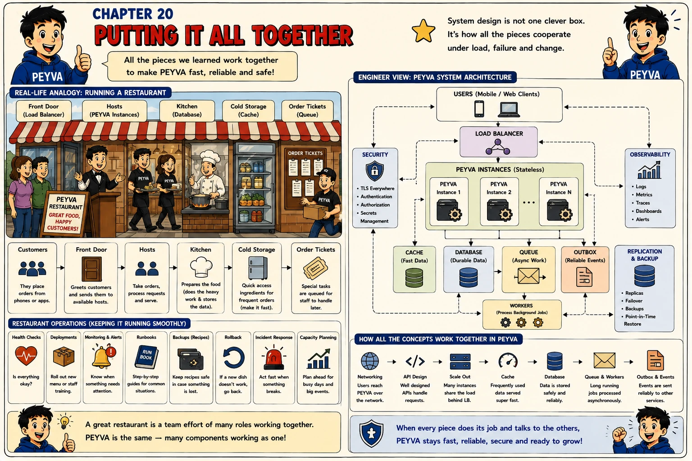

Chapter 20
Splitting the Vault: Sharding
One store can only grow so far. Splitting accounts across several is how the store scales, and it is where every guarantee that relied on one database has to be rebuilt.

1. Why
- Scaling out the copies never scaled the writes: every payment still ended at one Vault. Sharding is the only way to scale that, by giving each of several Vaults a subset of the accounts, so writes to different subsets never touch the same store.
- The shard key decides everything. Hashing the account handle spreads accounts evenly and makes 'which shard' a pure function any copy can compute; it also means alice and bob are on different shards half the time, and a payment between them can no longer be one transaction.
- A cross-shard payment is exactly the saga problem. Debit on one shard, credit on another, each a local transaction, with a durable record of how far it got and a compensation if the credit fails permanently. Everything the saga chapter built is now on the main path rather than at the edge.
- Between the debit committing on one shard and the credit committing on the other, money is in flight: gone from alice, not yet with bob. Conservation across shards only holds if in-flight amounts are counted as neither lost nor arrived.
- Rebalancing is the hidden cost. Adding a shard changes which shard a hash points to, and every account that moves has to be copied while payments continue. Consistent hashing limits how many move; it does not make the move free.
- Each shard needs everything one Vault needed: its own replica, its own lease. Two shards are two of every failure mode from the last six chapters, which is why sharding comes this late and why most systems put it off as long as they can.
2. Concepts
- Shard. One Vault holding a subset of the accounts, with its own database and its own Ledger entries for those accounts.
- Shard Key. The value that decides which shard an account lives on, here a hash of the handle. Any copy can compute it, so routing needs no lookup.
- Routing. Sending each request to the shard that owns the account. A payment names two accounts, and they may be on different shards.
- Cross-Shard Payment. A debit on one shard and a credit on another, which cannot share a transaction. Run as a saga with a durable record and a compensation.
- In Flight. Money debited on one shard and not yet credited on the other. Any check of the whole system has to count it, or conservation appears to fail during every cross-shard payment.
- Rebalancing. Moving accounts between shards when one is added or removed, while payments continue. Consistent hashing limits how many move.
3. Build It Hands-on Building in Go, change in Chapter 0
Decomposed Prompting. Routing, the cross-shard saga and in-flight accounting are three problems wearing one name. Solved separately, each can be checked on its own.
Documented in The Prompt Report: Decomposition, DECOMP
Every prompt below is copied with these rules, about 1048 tokens for the chapter
Build this in Go, standard library only.
Code in peyva/<component>/, one folder per component.
Money: exact decimal or integer minor units, never floating point, two decimal places.
The goal and invariants are in peyva/goal.md.
The goal and invariants are in peyva/goal.md.
1 of 5 Decompose~171 tokens
A payments system keeps every account in one store, and I want to split the accounts across two stores so that writes to different accounts can go to different stores. Before designing anything, break that into the separate sub-problems it contains. For each, say what it takes as input, what it must guarantee, and which of the earlier mechanisms in this system it reuses: transactions, idempotency, the saga record. Then say which sub-problem you would build first and why, and which one you would not build in this chapter at all. Done when I have a list of sub-problems with their guarantees, an order, and a reason for the order.
2 of 5 Route~243 tokens
The Vault runs as one process holding every account, and the copies find it by PEYVA_VAULT. Solve the first sub-problem, routing. Run two Vaults, each owning the accounts whose handle hashes to it, each with its own file and Ledger. The copies compute the shard from the handle and send each request to the owning Vault. Extend the runner to start both, and say what you changed in it. Opening an account and enquiring a balance go to one shard. A payment whose two accounts share a shard runs as it always did, one transaction. A payment whose accounts differ is refused for now, with an error that says so. Done when accounts spread across both shards, a same-shard payment works, and a cross-shard payment is refused with a clear message.
3 of 5 Cross-shard~256 tokens
Two Vault shards each own some accounts, and a payment between shards is refused. Solve the second sub-problem. Run a cross-shard payment as a saga: debit on the payer's shard with the payment reference, recording it in flight; credit on the recipient's shard with the same reference; mark complete. A permanent failure of the credit reverses the debit as a new Ledger entry pair. A timeout on the credit retries with the same reference. A copy dying between debit and credit resumes from the record after restart. Everything is idempotent by reference at both shards. Done when a cross-shard payment leaves balanced Ledger entries on both shards, a closed recipient account puts the money back, a kill between debit and credit completes on restart, and no sequence of retries credits twice.
4 of 5 In flight~242 tokens
Two Vault shards own the accounts, and cross-shard payments run as sagas with an in-flight record. Solve the third sub-problem. Expose, from each shard, the sum of its balances and the sum of its Ledger entries, and from the saga record every payment currently in flight with its amount, reference and the step it reached. Report any payment in flight longer than a threshold as stuck. Then show me, with ten cross-shard payments running and one deliberately stalled, that the balances on both shards plus the money in flight add up to what was seeded plus what was opened. Done when a healthy two-shard system adds up, a stalled payment is reported as stuck with its reference and step, and the total still adds up while it is stuck.
5 of 5 Replicate~136 tokens
Two Vault shards own the accounts, each a single process with its own file, while the earlier single Vault had a replica following its log and a lease saying which copy may write. Answer from the code: what it would take to give each shard its own replica and lease, what the copies' routing would have to do when one shard is promoted, and which of those two changes you would make first. Do not build it. Done when I have your answer on replicating a shard and the order you would do it in.
Quick tip: A payment inside one shard is a transaction. A payment across two is a saga. Design so most are the first kind.